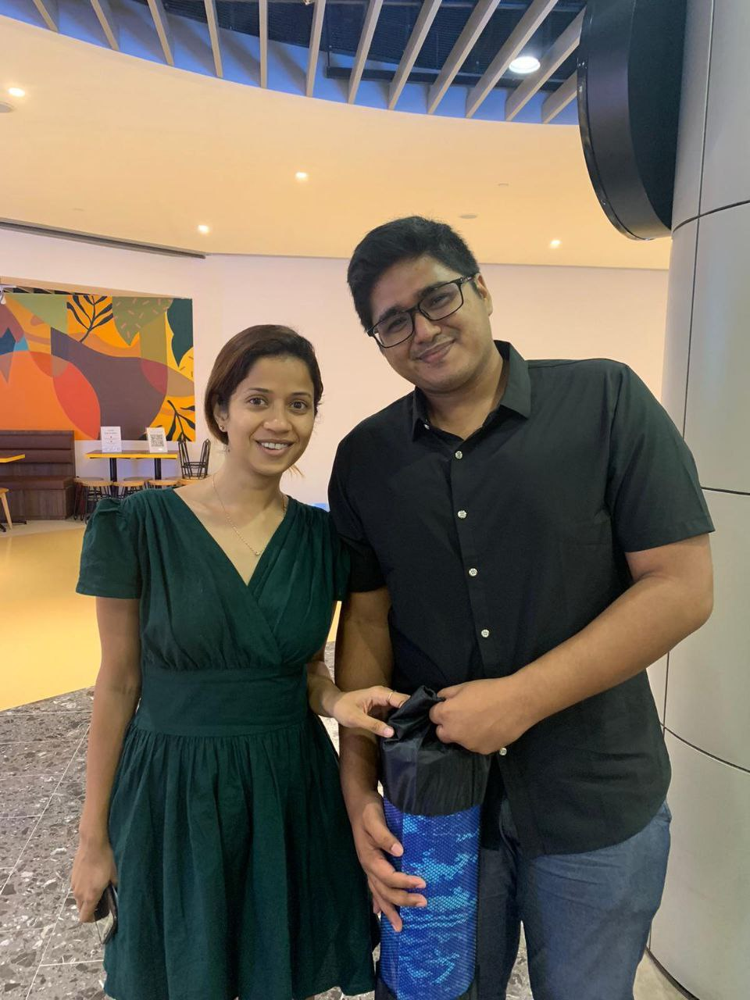

Previously from the Republic of Singapore Airforce (RSAF), I was an airforce engineer who specialised in flight line maintenance, and also launch and receive procedures.

I then joined Prudential as a financial consultant because I had a passion for investment and financials which I developed during my engineer days, in hopes that my knowledge will be able to help others muster their finance and have a better grasp of what they can do with their money.
Due to personal circumstances i had to leave my role as a consultant, but continued trading options as a source of income. Since then i have joined a course on web development to increase my skillset to better ready me for future opportunities.
⇐
⇒